A patch with two display changes to the Safety Histogram. Its charts now say what their axes and bars show. Clicking a bar lists the visit of each record. No value, bin or count changes.
A member of the Interactive Safety Graphics working group reviewed the histogram on 3 November 2026. The axes had no titles, and with one participant selected nothing said when each record was taken. This release titles the single-measure chart's axes, as the original safety-histogram did, gives each bar's count on hover on the small panels, and adds a Visit column to the bar listing. Each pair below is the same view in release 1.11.2 and in this release.
The x-axis names the measure and its unit. The y-axis says what each bar counts.
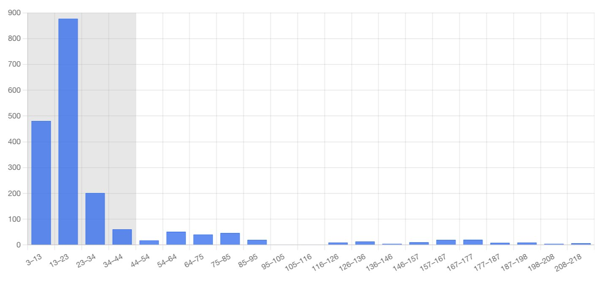
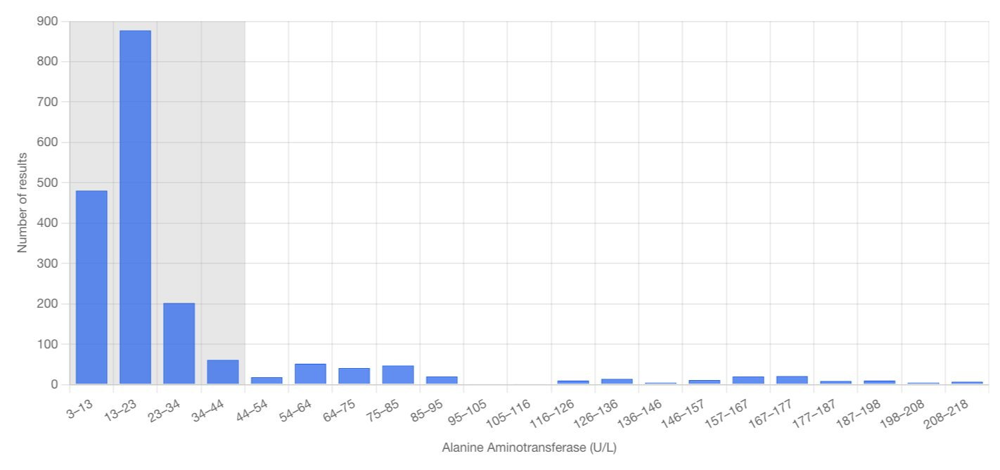
Alanine Aminotransferase (U/L), all participants. The 21 bars and their counts are the same in both.
The histogram opens on one panel for each measure. The line above the panels now says what each bar counts, and pointing at a bar shows its range and its count. The panels carry no axis title.
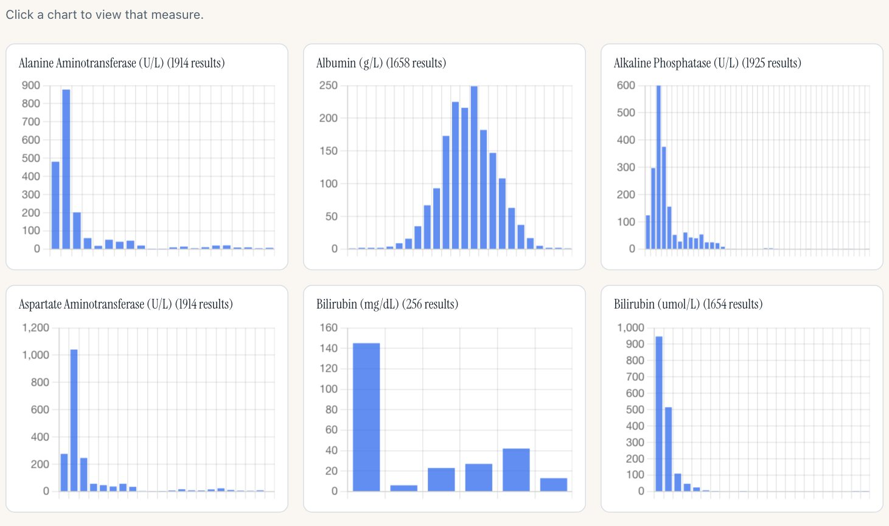
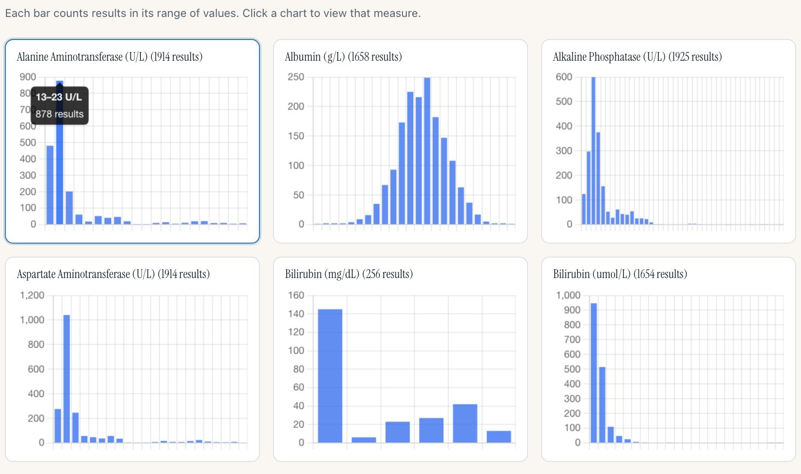
The first six of 29 panels. The counts are the same in both. Click a panel, or press Enter on it, to open its measure, as before. A phone shows no tooltip.
Grouping by treatment group draws a panel for each group under the titled chart. Pointing at a bar shows its range and count, as on the overview.
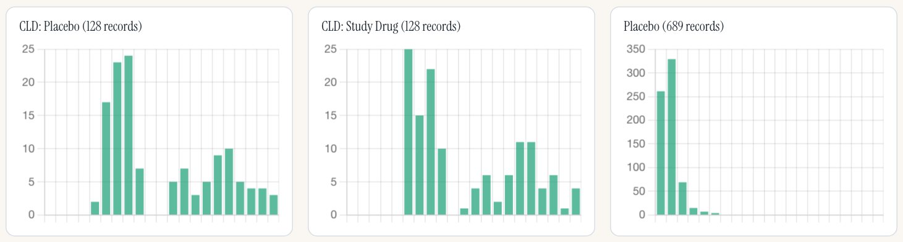
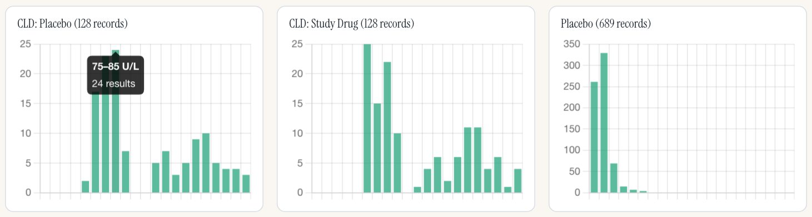
Alanine Aminotransferase (U/L), grouped by treatment group: the first row of 5 panels. The chart above them keeps both axis titles.
Select one participant, click a bar: each record now says which visit it is from. The participant ID, which the gallery page also offers as a filter, is listed once.
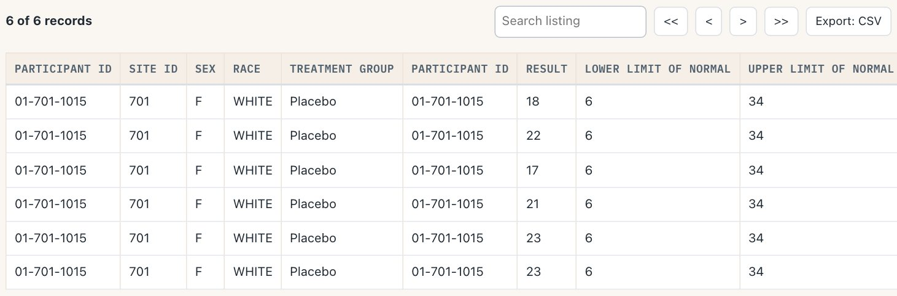
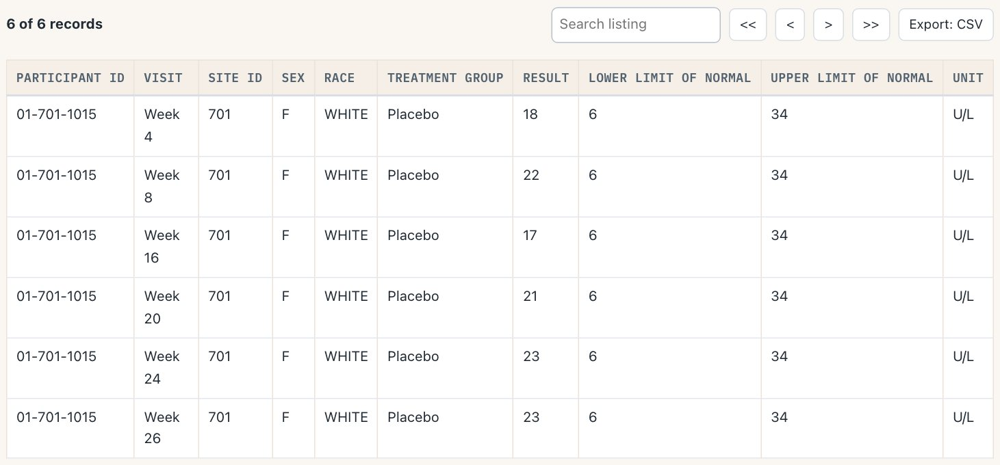
Participant 01-701-1015, Alanine Aminotransferase (U/L), the tallest bar: the same 6 records in both.
The demo app opens on the histogram, so it gets both changes.
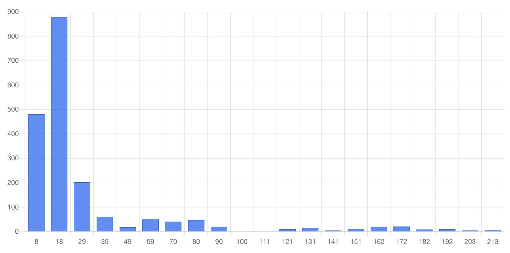
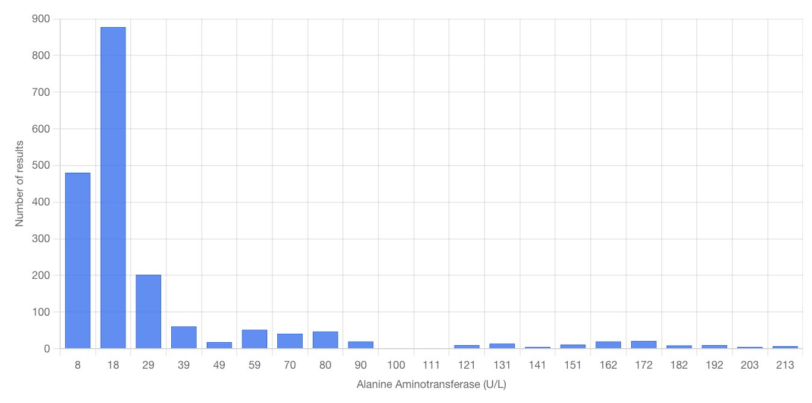
Alanine Aminotransferase in the demo app.
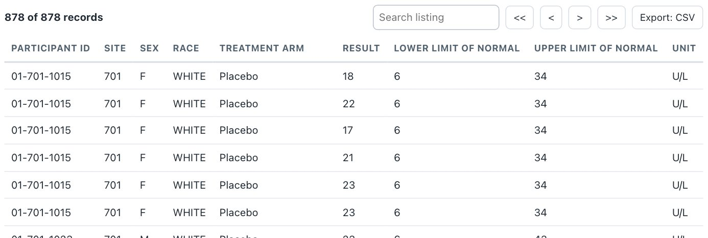
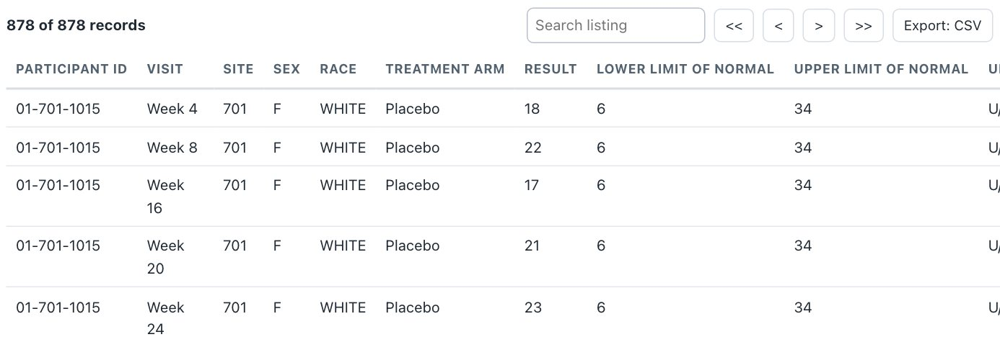
The tallest bar, clicked: the app offers no participant filter, so these are all 878 records in that bar. At a 1,280-pixel window the wider listing now runs past the card on the right; that is filed for the backlog (safety.viz #355).
The participant profile's time axis says "Study Day" but, on the demo data, plots visit numbers. It is unchanged here, and the listing has no study-day column for the same reason. Fixing it is its own development cycle: requirement 2 of the objective to firm up the tools for the ISG relaunch (obot.roadmap #429).